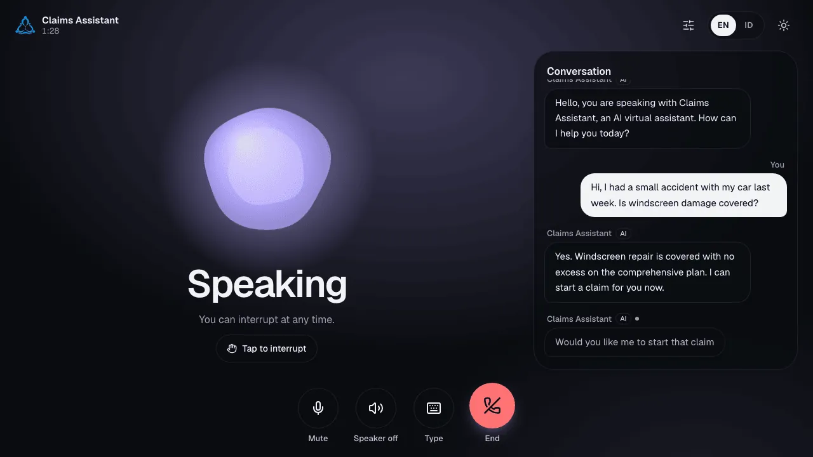
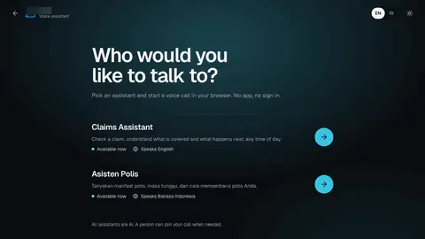
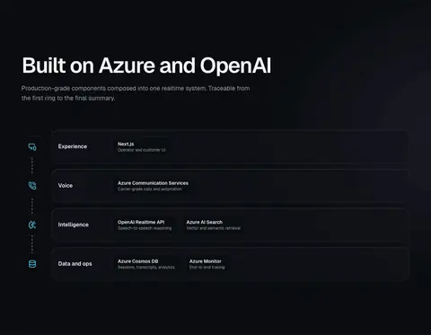
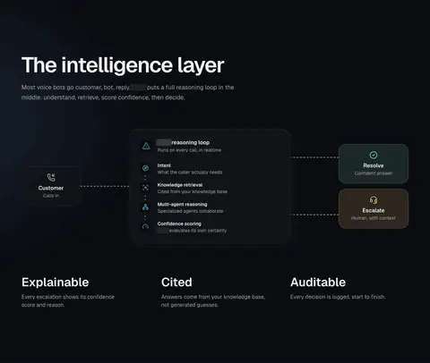
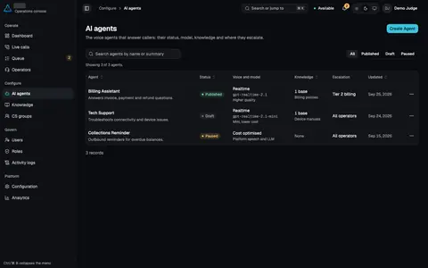

AIKey projectL3:voice-ai-contact-center
Realtime voice AI contact center
Natural caller interruption (~2 s to ~0.2 s), grounded answers and mid-call transfer to a human.
- Role
- Owner and lead engineer, responsible for design, AI coding agent direction, review and release
- Period
- May 2026 to Oct 2026
~2 s to ~0.2 s
Caller interruption latency during knowledge lookups
Controlled A/B on the same deployment, index and audio, n=4 calls per arm: 1,875 to 2,140 ms vs 93 to 220 ms.
Verified2 of 2
Node-loss drills passed; live calls survived
Hard VM-stop failover and caller-reconnect drills after diagnosing and fixing four root causes.
Verified6 vs 18
Hallucinated answers in model comparison; the quality gate retained the stronger realtime model
Evaluated offline with a calibrated LLM judge; mean score 4.71 vs 4.28.
VerifiedMigrated
Voice channel migrated from a retiring service; old path removed
Live cut-over completed well before the announced 2028 retirement, removing about 20.5k lines from the old path.
Verified
Problem
Callers needed an alternative to rigid phone menus: a voice agent with company knowledge-base answers, interruption during speech or search, and transfer to a human and back within the same call. Supervisors needed a live console.
What I did
- 01I combined two prototypes into one product and ported the realtime backend to Python and FastAPI.
- 02I made barge-in account for audio playout and moved knowledge-base tool calls out of the realtime loop into cancellable tasks sharing one time budget.
- 03I prepared the system for production with atomic writes, crash recovery, a replayable dead-letter queue, drain-gated releases, managed identity and infrastructure as code for each environment.
- 04I documented the decision to replace a retiring voice service with self-hosted WebRTC media on zonal VMs, then verified failover through hard VM-stop drills.
- 05I built a voice evaluation harness with a media emulator, golden questions and a calibrated LLM judge. Changes without supporting evidence stayed disabled.
Architecture
Layer 1
Browser calls over WebRTCSupervisor
Next.js operator console
Layer 2
Self-hosted on zonal VMs
Layer 3
Cancellable tools with a 2.5 s budget
Layer 4
Speech to speech, barge-inAzure AI Search
Hybrid and semantic searchCosmos DB
Atomic writes and dead-letter replay
Layer 5
Durable Functions, Document Intelligence
Gallery





7 images · click to open the viewer
Tech stack
 Azure OpenAI Realtime
Azure OpenAI Realtime- Azure AI Search
- Azure Speech
- Document Intelligence
- Durable Functions
- Cosmos DB
- App Service
- LiveKit
- Azure VMs
- Python
- FastAPI
- Next.js
- Entra ID
- OpenTelemetry
- Application Insights
 Bicep
Bicep- GitHub Actions